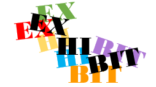
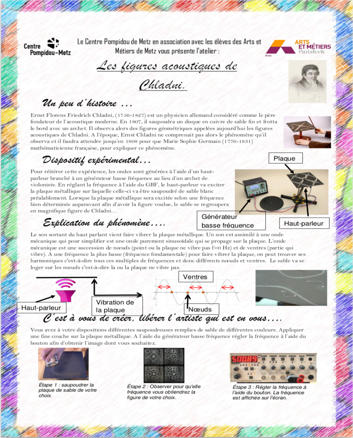
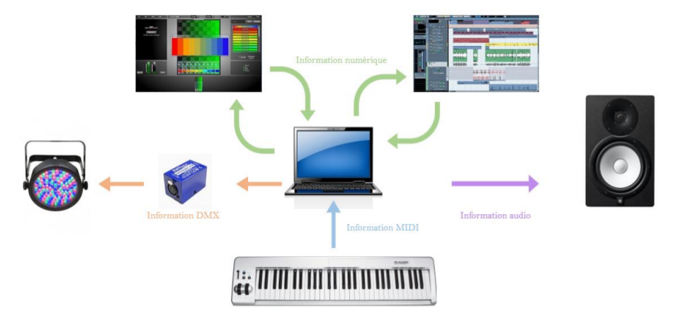

A project developed for the Centre Pompidou, Metz, France, in collaboration with Lucas Maigrat, Yi Liu, Abdelkrim Imazitene and Lionel Lebon.
In May 2016, the Centre Pompidou of Metz, France, was hosting the Musicircus exhibition. The exhibit theme was the exploration of links between music and visual arts.
As part of this show, the team offered the museum to prepare and animate workshops linking music and engineering on the opening day. About 300 people participated.

The project was designed for all ages and all backgrounds. We decided to design workshops using familiar objects and to explain the physical phenomenon or the engineered process behind it.
The team was on site during the opening day to help people get involved in the workshops and distributed explanatory sheets at each workshop.

Chladni figures workshop
With this project, we wanted to illustrate the relationship between sounds and shapes. The Chladni figures are direct representations of nodes and antinodes of a sound wave. Different shapes can be made using sand on a plate vibrating at specific frequencies.
Piano workshop
For this workshop, we linked sound with light. A piano was connected to spot lights which illuminate the space according to the note being played. Here we demonstrated the functioning of a MIDI controller, the data protocol DMX and LEDs to the public.

The Vème workshop
The Vème is an instrument invented during a previous collaboration between the Ecole Nationale Supérieure d'Arts et Métiers and the Orchestre National de Lorraine.
For the exhibit, we asked a professional percussionist to join us and present the wide range of frequences the Vème can produce.
For more information about the Vème, click here!